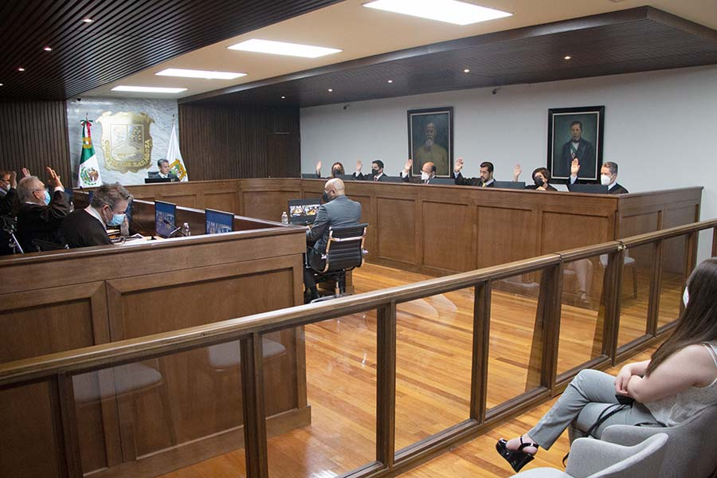
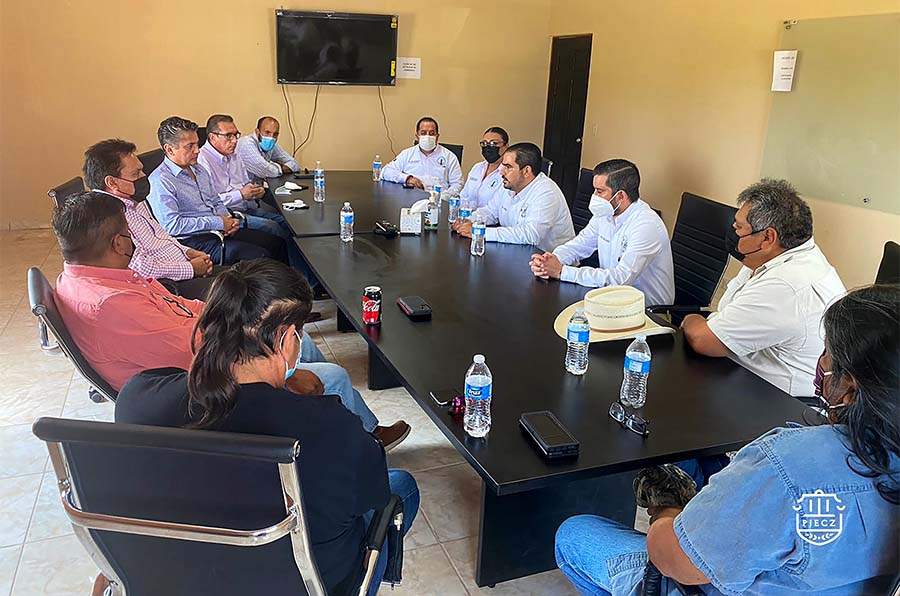
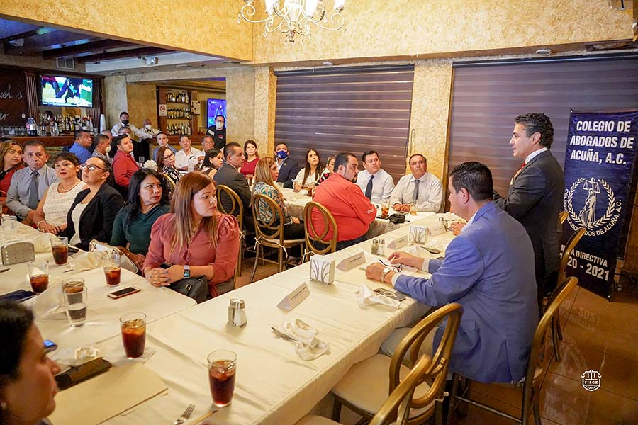
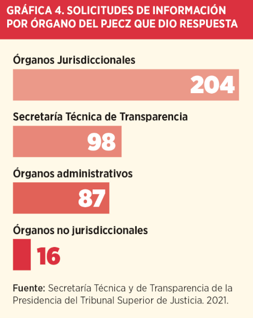
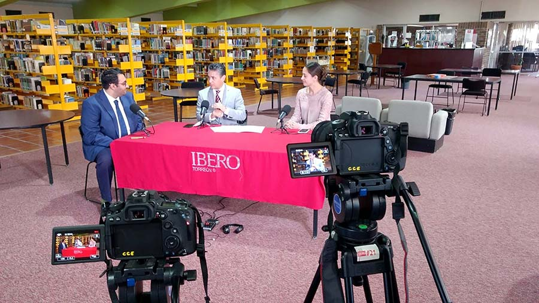
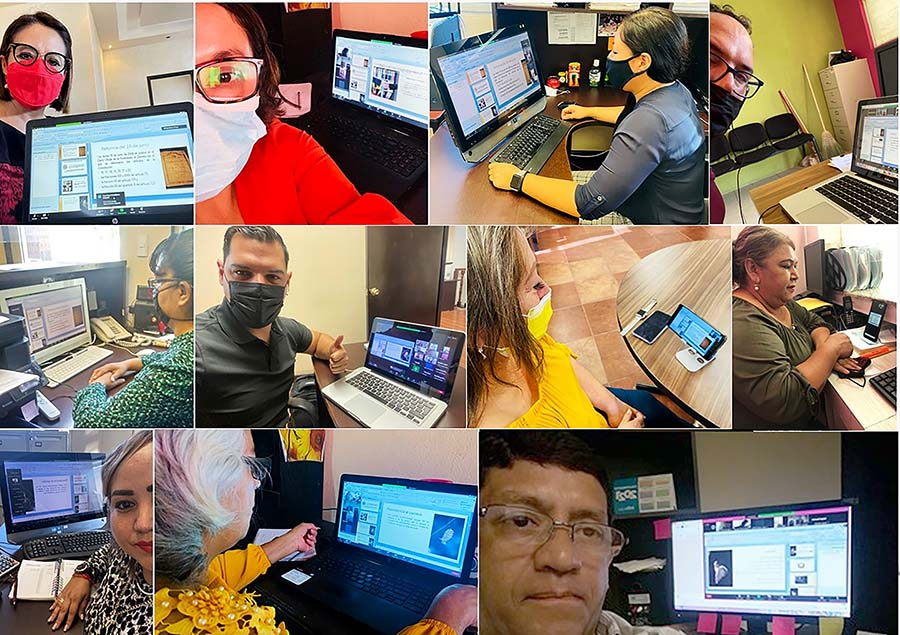

CAPÍTULO 5. JUSTICIA ABIERTA Y TRANSPARENTE
Dada la naturaleza de las funciones que desempeñamos en el Poder Judicial, históricamente nos colocamos como la entidad pública que es menos sometida al escrutinio público, idea que buscamos suprimir desde 2019 con la implementación de nuestro modelo de justicia en el estado.
Para lograr lo anterior, debemos reconocer que la participación y colaboración de la ciudadanía en el quehacer de la justicia potencia la eficacia y eficiencia en nuestros procesos administrativos y jurisdiccionales. Por ello, nos hemos enfocado en el establecimiento de líneas de acción que directamente inciden en la apertura hacia la sociedad, para que se mantenga depositada la confianza de los ciudadanos en los órganos que se encuentran a su disposición para acceder a la justicia y proteger sus derechos.
Hoy Coahuila cuenta con instancias judiciales que se rigen bajo los principios de transparencia y rendición de cuentas, para que aquellos interesados en conocer nuestra labor cuenten con los mecanismos necesarios para acceder a toda la información que generamos al interior, desde los acuerdos tomados en las sesiones del Pleno del Tribunal Superior de Justicia y sus Salas Colegiadas, o las audiencias que se llevan a cabo en materia penal, hasta los mecanismos que hemos implementado para favorecer la comunicación, como la línea de atención al usuario por WhatsApp.
Además destacamos la participación entusiasta de ciudadanas y ciudadanos que conforman el Observatorio Judicial, a fin de contar con un órgano que conozca de cerca la manera de operar dentro de este poder, que cuente con facultades para hacer recomendaciones y propuestas que nos permitan mejorar en la prestación de nuestros servicios.
También damos cuenta de la vinculación permanente de nuestros titulares con personas de la sociedad civil y con quienes conforman barras, colegios y foros de abogados, ya que este gremio es quien se relaciona directamente con los usuarios del sistema de justicia y son quienes acuden día a día a los juzgados para atender asuntos en todas las materias. Es muy importante para nosotros escuchar y atender sus inquietudes en búsqueda de una mejora en nuestro servicio.
Igualmente, conforme a la ley en la materia, damos atención puntual a las solicitudes de acceso a la información, y a la publicación y actualización de la denominada Información Pública de Oficio, para garantizar a todas las personas las herramientas idóneas para mantenerse al tanto de nuestro desempeño.
La transparencia va de la mano con acciones de difusión que nos permiten dar a conocer, a través de diversos medios de comunicación, la información más relevante y el anuncio de nuestras acciones, lo cual genera un puente directo con las personas para que conozcan la manera en la que pueden acceder a nuestra atención.
TRANSMISIÓN DE SESIONES DEL PLENO DEL TRIBUNAL SUPERIOR DE JUSTICIA
En 2021 continuamos con la transmisión en vivo de todas las sesiones del Pleno del Tribunal Superior de Justicia, que la ley orgánica establece. Este año en concreto lo hicimos con 47 sesiones del Pleno y 11 más del Tribunal Constitucional Local. Esta cantidad arroja en total 32 horas y 34 minutos.
Cabe mencionar que la mayoría de las sesiones celebradas fueron en modalidad mixta, es decir, que mediante el uso de la videoconferencia uno o más de los magistrados sostuvieron su plenaria de forma remota, haciendo uso de la herramienta Zoom para interactuar con el resto de los magistrados reunidos en la sala de plenos.

TRANSMISIÓN DE SESIONES DE LAS SALAS COLEGIADAS
Siguiendo la pauta marcada por las Sesiones de Pleno del Tribunal Superior de Justicia, se realizó el adecuado mantenimiento a los equipos instalados en los recintos de las Salas Colegiadas Civil y Familiar, Penal y Regional, con la finalidad de mantener la transmisión de sus sesiones en nuestro sitio web y a través de redes sociales.
Las Salas Colegiadas mantuvieron la realización de sus sesiones mediante la modalidad mixta. Este año sumaron un total de 141, acumulando 152 horas y 32 minutos de transmisión.
Sumadas las Sesiones de Pleno del Tribunal Superior de Justicia, las del Pleno en carácter de Tribunal Constitucional Local y las correspondientes a las Salas Colegiadas, durante 2021 se compartieron 199 sesiones que comprenden 185 horas y seis minutos de transmisión de las máximas instancias jurisdiccionales, disponibles en todo momento para su visualización en nuestro sitio web o redes sociales.
Tabla 34. Sesiones transmitidas en vivo por órgano
| Órgano | Sesiones | Minutos |
|---|---|---|
| Pleno del Tribunal Superior de Justicia | 47 | 1,390 |
| Pleno del Tribunal Superior de Justicia en carácter de Tribunal Constitucional Local | 11 | 564 |
| Sala Colegiada Civil y Familiar | 47 | 3,803 |
| Sala Colegiada Penal | 47 | 3,725 |
| Sala Regional | 47 | 1,624 |
| Total | 199 | 11,106 |
Fuente: Dirección de Informática de la Oficialía Mayor del Poder Judicial del Estado de Coahuila de Zaragoza. 2021.

DESAHOGO DE AUDIENCIAS PENALES MEDIANTE VIDEOCONFERENCIA
Este año mantuvimos la realización de audiencias en Materia Penal a través de videoconferencia, como medida de prevención ante la contingencia sanitaria. Como resultado obtuvimos mil 240 audiencias efectuadas en los Distritos Judiciales de Monclova, Parras de la Fuente, Sabinas y Saltillo.
VINCULACIÓN CON LA SOCIEDAD CIVIL
Durante este año mantuvimos y creamos nuevas alianzas para impulsar la colaboración del Poder Judicial con diversos organismos de la sociedad civil, quienes de manera activa participaron en la búsqueda de objetivos en común.
Estos lazos de colaboración abarcan organismos en materia educativa como: la Academia Mexicana de Derecho Informático, la Universidad Iberoamericana Campus Torreón, la Universidad Autónoma del Noreste, la Universidad Vizcaya de las Américas, la Universidad La Salle y la Universidad Laboral de México 4.0, perteneciente a la Confederación de Trabajadores de México (CTM).
También hicimos lo propio con organismos encargados de la protección de Derechos Humanos de grupos vulnerables como: el Observatorio Internacional de Derechos Humanos, Equis Justicia para las Mujeres y el colectivo Madres Poderosas de la Laguna.
Asimismo, estrechamos alianzas con organismos del sector empresarial como: la Cámara Nacional de Comercio (CANACO) de Saltillo, la Confederación Patronal de la República Mexicana (COPARMEX) y la Confederación de Cámaras Nacionales de Comercio Servicios y Turismo (CONCANACO Servytur). Además de instancias de evaluación del desempeño gubernamental como: México Evalúa y la Agencia de los Estados Unidos para el Desarrollo Internacional (USAID).

DIÁLOGO CON BARRAS, COLEGIOS Y FOROS DE ABOGADOS
En la misma ruta de estrechar los lazos colaborativos con grupos representantes de distintos sectores de la sociedad, en 2021 continuamos con la comunicación directa con el gremio del derecho, al ser los profesionistas que interactúan cotidianamente con nuestros servicios.
Es importante para nosotros atender sus inquietudes y sugerencias a fin de encontrar en conjunto mejoras en la impartición de justicia. En este sentido, llevamos a cabo reuniones con barras, colegios y foros de abogados en las ciudades de Acuña, Monclova, Parras, Piedras Negras, Sabinas, Saltillo y Torreón.
LÍNEA DE ATENCIÓN A LOS USUARIOS POR WHATSAPP
Durante el año dimos continuidad al servicio de atención ciudadana que se lleva a cabo a través de WhatsApp, implementado desde 2019 y que permite que las y los usuarios soliciten información sobre los servicios brindados por el Poder Judicial, así como la oportunidad de presentar quejas contra servidores públicos de esta institución.
De esta forma atendimos a dos mil 805 usuarios mediante la recepción y envío de más de 160 mil mensajes, dando puntual seguimiento a cada uno de ellos mediante la canalización a las instancias correspondientes.
OBSERVATORIO JUDICIAL
En el Poder Judicial propiciamos e impulsamos la participación de la sociedad en nuestras labores, bajo un esquema de justicia abierta. Esto se fortalece con la actuación que desde 2017 realiza el Observatorio Judicial, como órgano ciudadano de apoyo en la vigilancia y supervisión a las actividades de nuestros órganos jurisdiccionales. El Observatorio Judicial está integrado por representantes de los sectores social, académico y empresarial, quienes fungen como canal de comunicación con la ciudadanía; y es a través de sus recomendaciones que detectamos áreas de oportunidad para mejorar los servicios que ofrecemos a las y los ciudadanos.
En ese sentido, durante 2021 el Capítulo Regional de Torreón continuó con la implementación del proyecto denominado Evaluación de la Operación del Poder Judicial en el Sistema Penal Acusatorio y Oral, donde consejeras y consejeros analizaron el desempeño administrativo y jurisdiccional del Juzgado de Primero en Materia Penal del Sistema Acusatorio y Oral en esa ciudad, a través de visitas de inspección al Centro de Justicia Penal y la aplicación de encuestas a las y los abogados y a los usuarios del sistema de justicia. Esto, aunado al análisis de la información estadística que se genera al interior del Poder Judicial, nos permite tener como resultado la identificación de las problemáticas específicas de la región en materia de justicia penal, para atenderlas de manera eficiente. Lo mismo comenzó a realizarse en los Juzgados Especializados en Violencia Familiar contra la Mujer, que iniciaron funciones en enero del año que se informa.
El Capítulo Regional realizó un análisis de los principales delitos judicializados en los distritos judiciales correspondientes, con el objetivo de generar un estudio relativo al comportamiento del fenómeno delictivo y, a su vez, poder formular recomendaciones en materia de seguridad y justicia.
Este año, además, el Capítulo Regional se dio a la tarea de evaluar la accesibilidad y funcionalidad de los servicios digitales que ofrece el Poder Judicial del Estado, a través de la interpretación de los datos estadísticos internos y la aplicación en línea de la encuesta de satisfacción de quienes hacen uso de estos, a fin de detectar oportunidades de mejora.
En ese sentido, seguimos empeñando esfuerzos por la mejora en la impartición de justicia, por contar con absoluta transparencia en nuestras actividades, y por hacer de este Poder Judicial una instancia confiable y garante de los derechos de las y los coahuilenses.
ATENCIÓN A SOLICITUDES DE ACCESO A LA INFORMACIÓN
Entendemos el acceso a la información como una prerrogativa que permite a los ciudadanos conocer cualquier tipo de información generada por un ente público; esta definición cobra relevancia al permitir que cualquier ciudadano, sin necesidad de acreditar interés en particular, conozca nuestras actividades, acciones, estructura, el manejo de los recursos y el marco normativo que nos rige, entre otros aspectos.
En ese sentido, en este poder público reafirmamos el compromiso con la justicia abierta. Como resultado de ello, durante 2021 atendimos a través de las unidades de transparencia, de la Secretaría Técnica y de Transparencia de la Presidencia del Tribunal Superior de Justicia y del Tribunal de Conciliación y Arbitraje, 405 solicitudes de acceso a la información en las que respondimos mil 302 cuestionamientos, colocándonos durante 10 meses consecutivos en el top ten del Instituto Coahuilense de Acceso a la Información Pública (ICAI), instrumento que analiza el número de solicitudes recibidas y atendidas por las entidades estatales.

INFORMACIÓN PÚBLICA DE OFICIO DEL PODER JUDICIAL
La difusión de la Información Pública de Oficio (IPO) responde al derecho fundamental de las personas de solicitar, investigar y obtener información pública de su interés. En ese contexto, los entes públicos tienen la obligación de poner a disposición, de manera accesible, clara, completa y puntual el conjunto de datos que describen cada uno de los rubros que la ley en la materia determina.
A fin de conocer el grado de cumplimiento de las obligaciones señaladas en la normatividad aplicable, cada trimestre somos evaluados por el Instituto Coahuilense de Acceso a la Información (ICAI), órgano garante en la materia. Para solventar esta revisión, difundimos en nuestro sitio web la IPO a través de formatos abiertos y accesibles, los cuales son actualizados continuamente.
Durante el 2021, en los primeros tres trimestres obtuvimos en promedio una calificación de 99.81 en el cumplimiento de las obligaciones marcadas en la ley local. Con este resultado, nos consolidamos como una instancia confiable, transparente y cercana a la sociedad, al ubicarnos por quinto año consecutivo dentro de los primeros lugares a nivel estatal.
COMUNICACIÓN Y DIFUSIÓN
Con el firme compromiso de operar un sistema de justicia accesible y cercano a la gente, durante 2021 continuamos con el manejo objetivo de todas las redes sociales oficiales del Poder Judicial, a fin de mantener un canal de comunicación directa y efectiva para dar a conocer las actividades diarias del titular de la Presidencia del Tribunal Superior de Justicia, así como toda la información relevante sobre temas de interés general para la población, tutoriales para el uso correcto de las plataformas de justicia digital, avisos generales sobre los servicios que brindamos, y la difusión oportuna de cursos y talleres impartidos por el Instituto de Especialización Judicial y demás órganos pertenecientes a este poder.
Aunado a lo anterior, mantuvimos la emisión del programa Poder Judicial al Aire, con la participación del conductor Leopoldo Ramos. Este fue emitido dos veces por semana en colaboración de Coahuila Radio y Televisión, y fue posible contar con la presencia de juezas, jueces, funcionarias y funcionarios del Poder Judicial del Estado de Coahuila de Zaragoza.
Los temas abordados durante el 2021 fueron: las funciones y actividades del Instituto de Especialización Judicial, las funciones del Registro Estatal de Deudores Alimentarios Morosos, la audiencia preliminar en Materia Mercantil, la operación del Juzgado Penal Tradicional, los interdictos, el reconocimiento y desconocimiento de paternidad, las funciones del Instituto Estatal de Defensoría Pública, la solución de conflictos comunitarios y conflictos familiares, cápsulas con motivo del Día Internacional de la Mujer en las que participaron juezas y magistradas, el régimen patrimonial del concubinato, los servicios y funcionamiento del Centro de Evaluación Psicosocial, la violencia familiar, la rectificación de actas, las funciones del Archivo Judicial, la filiación, la paternidad, la justicia restaurativa, la violencia de género, las cargas probatorias y la inmediación en las audiencias.
Abordamos también temas como el divorcio desde sus implicaciones legales y psicológicas, el matrimonio, el ciudadano frente a la justicia penal, la usucapión, los interdictos, las pruebas y los recursos en Materia Civil, el pagaré, la inteligencia emocional en la mediación, el proceso de certificación en la mediación, las funciones del defensor público, los juicios mercantiles, la composición de los juzgados, la gestión de juzgados en el Sistema de Justicia Penal Acusatorio y Oral, la suspensión condicional del proceso penal, las soluciones alternas al juicio penal, el procedimiento abreviado, la prisión como medida, las facultades del juez penal, la aplicación de la justicia con perspectiva de género, las medidas cautelares, la etapa intermedia en el proceso penal y las funciones de la Unidad de Derechos Humanos e Igualdad de Género.

Este año dimos continuidad al uso del espacio que nos brindaron en emisoras de radio como Radio Universidad y RCG. Realizamos 24 programas de radio que se denominaron Radio Estatal Online, con la participación de personal adscrito a las siete delegaciones del Instituto Estatal de Defensoría Pública, que fueron transmitidos vía Zoom y Facebook Live.
En el mes de enero también reactivamos nuestra participación con Radio Universidad en el programa Defensoría Contigo, el cual se transmitió todos los lunes en horario de 10:30 a 11:00 horas de manera virtual por la plataforma Skype, y a partir del mes de julio los programas fueron transmitidos de forma presencial.
Destacamos también que a partir del mes de junio, gracias a las gestiones realizadas por personal de comunicación social del IEDP, se nos brindó un espacio en la emisora La Reina 100.9 FM, con la conducción de Pablo Garduño. Fue posible realizar 23 emisiones en donde, además de abordar diversos temas legales, pudimos brindar asesoría respecto al programa de Justicia Itinerante.
De la misma forma, a partir del mes de octubre comenzamos nuestra participación en el programa Región Informa de la emisora 91.3 FM Saltillo, el cual es transmitido todos los miércoles de 13:00 a 14:00 horas. A la fecha participamos en 10 emisiones donde tratamos asuntos de carácter legal para asesorar a los radioescuchas.
Otra actividad en este ámbito fue el programa MASC Justicia, transmitido los martes de 11:30 a 12:00 horas por el 104.1 FM de Radio Universidad, en el cual se desarrollaron temas de justicia alternativa, solución de conflictos, formas de solución pacífica, mediación y conciliación en distintas materias, entre otros.
PROMOCIÓN Y DIFUSIÓN DE LOS MEDIOS ALTERNOS DE SOLUCIÓN DE CONTROVERSIAS
Además de las labores ya mencionadas, continuamos este año en la impartición de pláticas de difusión a diversas instituciones públicas y de la sociedad civil, con la finalidad de dar a conocer de manera directa y sencilla el uso de estas herramientas. Estos eventos se dieron principalmente de forma virtual y algunos de ellos de manera presencial, en los que pudimos sensibilizar a 10 mil 377 personas, principalmente madres y padres de familia, así como a estudiantes de los niveles primaria, secundaria, bachillerato y profesional.
